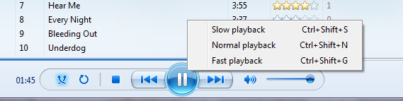

The Most Fun You’ll Have on Windows Media Player
Right-click on the pause/play button and a menu will pop up with the items: “Slow playback,” “Normal playback,” and “Fast playback.” “Slow playback” will play the song at half its normal speed, “Normal playback” will play the song at the normal speed, and “Fast playback” will play the song at twice its normal speed.
How have I been using Windows this long and not know this trick?!